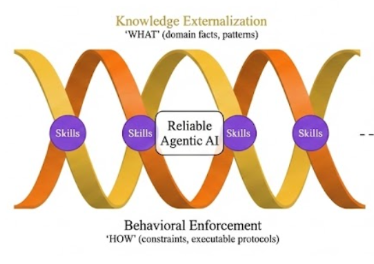
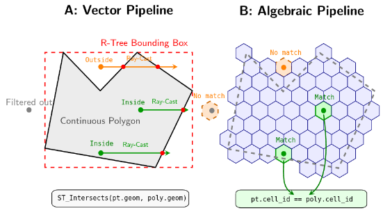

Two Papers Accepted: DGGS and Agentic AI
The publication pipeline set into motion with the founding of the GATOR Lab is beginning to mature. Over the last couple of days, two papers have been accepted for publication — one journal article, anone at a flagship conference — with several other manuscripts under review and nearing a decision. Both papers sit at the forefront of what this lab is all about.
Paper 1 — Dual-Helix Governance for Agentic AI in WebGIS
“A Dual-Helix Governance Approach Towards Reliable Agentic Artificial Intelligence for WebGIS Development”
Levente Juhász, Boyuan Guan & Wencong Cui
Accepted in Transactions in GIS · ArXiv preprint
This paper is co-authored with Boyuan Guan and Wencong Cui, former colleagues from the FIU GIS Center, and represents a significant step forward in making agentic AI systems reliable enough for production geospatial engineering.

WebGIS development requires consistency, yet agentic AI often fails due to LLM context constraints, forgetting, stochasticity, instruction failure, and adaptation rigidity. We propose a dual-helix governance framework reframing these as structural problems rather than capacity deficits. Using a 3-track architecture (Knowledge, Behavior, Skills) and a persistent knowledge graph, it stabilizes execution by externalizing facts and enforcing protocols. Validation shows a governed agent successfully refactored a legacy WebGIS codebase (reducing cyclomatic complexity and improving maintainability), roughly halved trial-to-trial output variance relative to static prompting in a controlled experiment, and prevented common infodemic mapping errors in a 5-condition COVID-19 cartography ablation study. Operationalized via the open-source AgentLoom toolkit, this externalized governance provides the stability necessary for production-level geospatial engineering.
Paper 2 — DGGS Hash-Joins at Scale (ACM SIGSPATIAL ’26)
“Accelerating Point-in-Polygon Predicates via Algebraic Hash-Joins and Discrete Global Grids at Scale: An Interactive Benchmark”
Levente Juhász
Accepted at ACM SIGSPATIAL 2026, Riverside, CA · ArXiv preprint
This solo-author paper will be presented at ACM SIGSPATIAL ’26 later this year, one of the premier venues for spatial computing research.

Traditional vector-based point-in-polygon queries rely on computationally expensive geometric predicates that scale poorly for massive datasets, even when accelerated by spatial indices. Discrete Global Grid Systems (DGGS) offer a scalable alternative by discretizing geometries into hierarchical cells, transforming complex spatial relations into constant-time relational hash-joins. However, adopting a DGGS introduces an overhead to encode data, and current grid implementations exhibit a significant performance “tooling gap.” In this demonstration, we present an interactive dashboard that empirically evaluates these computational tradeoffs across four DGGS implementations (H3, S2, A5, and ISEA4H) using DuckDB. Through progressive scenarios, the platform visualizes the overhead of on-the-fly encoding and demonstrates how pre-indexing spatial datasets eliminates this overhead. Ultimately, the demo proves that when data is pre-indexed, all DGGS regardless of their mathematical complexity or tooling converge to sub-second join latencies, unlocking the throughput of modern vectorized execution engines.
A Maturing Research Agenda
These two acceptances are not coincidental. They represent the two most exciting frontiers in modern GIScience (well, at least to us), and both are core to what the GATOR Lab is building. Discrete Global Grid Systems are reshaping how we think about spatial data infrastructure at planetary scale, replacing expensive geometric predicates with algebraic efficiency, among other benefits. Agentic AI is redefining what it means to build geospatial software, raising fundamental questions about reliability, governance, and trust. We are just gettings tarted. Stay tuned.